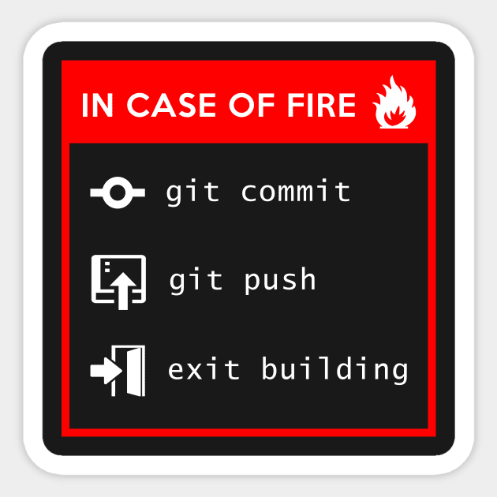

Git Good!
Table of Contents

1. Be safe, or be sorry!
1.1. Why Are Backups Important
1.1.1. Recovery
If something happens to your machine, you do not want to lose all your work! This is an even greater problem for coding projects that span decades!
1.1.2. History
If you want to make experimental changes, it is easier to do so if you know that you can always recover your previous state.
1.2. Ergonomic Backups
The backup process should not interrupt (or significantly slow down) the development process.
2. Collaboration
How do you manage a project worked on by tens of people? What about hundreds? What about thousands of developers all making changes to the source code?
3. Version Control Systems to the Rescue!
Version Control Systems keep track of the history (or different versions) of your project. They solve the collaboration problem by being able to support different versions (or branches) of the source code.
groceries.txt (John's branch): > milk > flour groceries.txt (Bob's branch): > milk > flour > tomatoes
When developers are ready to merge two branches, the version control system allows them to do so.
groceries.txt (John's branch, after Bob merged his changes): > milk > flour > tomatoes
If the changes cannot be automagically applied, a merge conflict will arise. The developer needs to resolve the merge conflict in order to successfully merge the branches.
The most popular version control system today, and the topic of today's workshop is…
4. Git
FUN FACT: Git was created by Linus Torvalds to manage the development of Linux! So if Git is good enough for Linux, it is probably good enough for you!
4.1. Back to the Basics
Git keeps track of your history in the .git directory. The directory in which .git is located is called the root project directory. You need only one .git file per project and that is fully managed by Git itself.
Your entire source code is referred to as a repository. The repository on your machine is the local repository, but if you upload your code to the cloud (see below), then the cloud repository will be referred to as the git repository.
Git is managed by the git command: Install Git Guide
4.2. Let's Git Going!
# Go to the directory which you want git to track cd example_dir # Initialize directory to be a git directory (creates .git directory) git init # 🧑💻 touch groceries.txt echo -e "milk\neggs\nflour" > groceries.txt # (optional) Check changes made in git repo git status # Add your changes to git # (the dot means everything in the current directory and subdirectories) git add . # (optional) If you want to add only a certain file git add <name of file> # Commit your changes (or associate a message with your changes) git commit -m "your message here" # Next Step: syncing with the cloud
5. Sync to the Hub…the GitHub
5.1. What is "the Cloud"
You can think of the cloud as a computer that is always on (i.e. a server) managed by someone, somewhere in the world. Since the cloud is (almost) always up and running, you should be able to access your files at any time (think OneDrive, Google Drive, Dropbox, etc.).
5.2. Github, the Developer's Cloud Storage
- Upload / download code
- Inspect code (syntax highlighting)
- Automated testing of the code
- Management of projects (issue lists, wikis, etc.)
- etc.
Github is the industry standard, but not the only option:
- Gitlab
- CodeBucket
- Gitea
5.3. Hosting Your Own Code Repository Server
If you have a spare computer around you can host your own code repository server. Some pre-built options are:
- Gitlab
- Gitea
5.4. Git Syncing!
5.4.1. Prerequisites (for Github)
- Github account with an SSH key
- Github repository
5.4.2. Prerequisites (in general)
- Local git repo
5.4.3. Ready, Set, Sync!
# Be inside your local git repo cd example_dir # Assuming you have committed changes... # Add remote (or the server repo's link) git remote add origin <repo link here> # Push your changes to the default branch git push # (option) If you want to push to another branch git push origin <branch name>
5.4.4. Downloading Your Source Code
Let's say your computer was destroyed by an alien invasion, or perhaps more simply you want to share your code on your friend Bob's computer, how would you do that?
- Downloading Everything from Scratch
git clone <repo link>
- Updating Your Local Repo
If you already have the repo on your machine and you just want to update it to any changes that someone has made, this option is for you.
# Make sure you are in the git directory cd example_dir # (optional) Check if there are any updates, but does not update git fetch # Update repo with new changes git pull # (option) Update repo with changes from another branch (git will try to merge) git pull origin <other branch>
6. Groceries: A Practical Example
# Create empty directory mkdir groceries cd groceries git init touch groceries.txt git add . git commit -m "created groceries file" # we are not syncing to github in this example, but if we wanted to: # git remote add origin <repo url> # git pull remote origin # git push -u origin master
Current state of our git repo:
"created groceries file"
master: ------o
Let's add our groceries:
git switch -c my_groceries echo -e "milk\neggs" > groceries.txt git add . git commit -m "added my groceries"
But at the same time Mark Zuckerberg adds his groceries to the same list (from his branch, so that we can make changes at the same time):
# Start from master branch git switch master git switch -c zuck_groceries echo -e "milk\nlizard_juice" > groceries.txt git add . git commit -m "zuck groceries"
The state of our git repo looks like this:
"created groceries file"
master: -----------o
\ "added my groceries"
my_groceries o----------------
\ "zuck groceries"
zuck_groceries: o----------------
As you can see, we have three different versions of the same file in different branches (_master_, my_groceries, zuck_groceries). Now lets combine (or merge) all our changes.
First my_groceries to master:
# Make sure we are on the right branch # (notice that -c is needed only when creating a new branch) git switch master # Merge to master from my_groceries git merge my_groceries # (optional) If we merging from the cloud: # git merge origin my_groceries # (optional) If you would like a squash merge # git merge origin my_groceries
The state of our git repo looks like this:
"created groceries file"
master: -----------o o--------------
\ "added my groceries" /
my_groceries o---------------------------
\ "zuck groceries"
zuck_groceries: o-------------------------------------------
Now zuck_groceries (WARNING! This will result in a merge conflict):
git merge zuck_groceries # We will get merge conflicts git mergetool
The conflict is in line 2:
1: milk 2: eggs
1: milk 2: lizard_juice
7. Do You Git It Now?
No? Then practice!